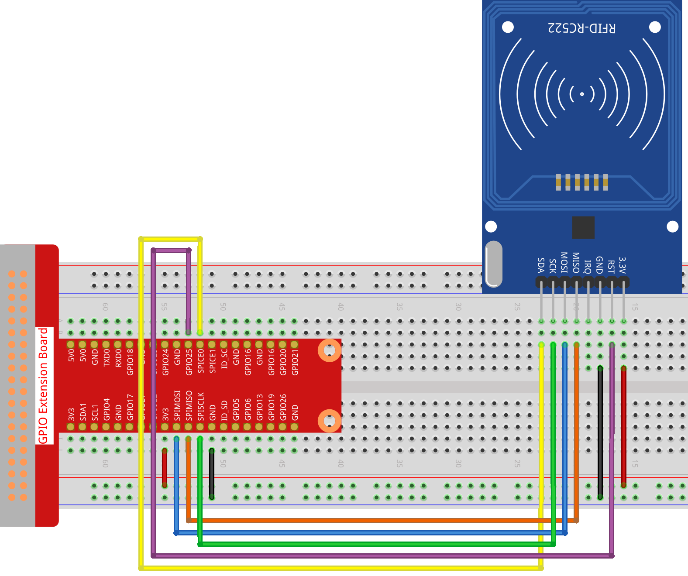

Nota
Ciao, benvenuto nella Community su Facebook per gli appassionati di SunFounder Raspberry Pi, Arduino e ESP32! Approfondisci l’uso di Raspberry Pi, Arduino e ESP32 con altri appassionati.
Perché unirsi?
Supporto da esperti: Risolvi problemi post-vendita e sfide tecniche con l’aiuto della nostra comunità e del nostro team.
Impara e condividi: Scambia consigli e tutorial per migliorare le tue abilità.
Anteprime esclusive: Ottieni accesso anticipato agli annunci di nuovi prodotti e anteprime.
Sconti speciali: Approfitta di sconti esclusivi sui nostri prodotti più recenti.
Promozioni festive e giveaway: Partecipa ai giveaway e alle promozioni festive.
👉 Sei pronto a esplorare e creare con noi? Clicca su [Qui] e unisciti oggi stesso!
2.2.7 Modulo RFID MFRC522
Introduzione
L’identificazione a radiofrequenza (RFID) fa riferimento a tecnologie che utilizzano la comunicazione wireless tra un oggetto (o tag) e un dispositivo interrogante (o lettore) per tracciare e identificare automaticamente tali oggetti.
Alcune delle applicazioni più comuni per questa tecnologia includono catene di approvvigionamento al dettaglio, militari, metodi di pagamento automatici, monitoraggio e gestione bagagli, tracciamento documenti e gestione farmaceutica, tra le altre.
In questo progetto, utilizzeremo RFID per la lettura e la scrittura.
Componenti

Principio
RFID
L’identificazione a radiofrequenza (RFID) coinvolge tecnologie che utilizzano la comunicazione wireless tra un oggetto (o tag) e un dispositivo interrogante (o lettore) per tracciare e identificare automaticamente tali oggetti. La portata di trasmissione del tag è limitata a pochi metri dal lettore. Non è necessariamente richiesta una linea di vista chiara tra lettore e tag.
La maggior parte dei tag contiene almeno un circuito integrato (IC) e un’antenna. Il microchip memorizza le informazioni ed è responsabile della gestione della comunicazione a radiofrequenza (RF) con il lettore. I tag passivi non hanno una fonte di energia indipendente e dipendono da un segnale elettromagnetico esterno fornito dal lettore per alimentare le loro operazioni. I tag attivi, invece, contengono una fonte di energia indipendente, come una batteria, e possono quindi avere maggiori capacità di elaborazione, trasmissione e portata.

MFRC522
MFRC522 è un tipo di chip integrato per la lettura e scrittura di schede, comunemente utilizzato a 13,56 MHz. Prodotto dalla NXP, è un chip di scheda non a contatto a basso voltaggio, basso costo e di piccole dimensioni, ideale per strumenti intelligenti e dispositivi portatili.
L’MF RC522 utilizza un avanzato concetto di modulazione e demodulazione, pienamente rappresentato in tutti i tipi di metodi e protocolli di comunicazione senza contatto a 13,56 MHz. Inoltre, supporta l’algoritmo di crittografia rapida CRYPTO1 per verificare i prodotti MIFARE. MFRC522 supporta anche la comunicazione non a contatto ad alta velocità della serie MIFARE, con una velocità di trasmissione dati bidirezionale fino a 424 kbit/s. Come nuovo membro della serie di lettori integrati altamente integrati a 13,56 MHz, MF RC522 è molto simile agli esistenti MF RC500 e MF RC530, ma con notevoli differenze. Comunica con il dispositivo host tramite interfaccia seriale, riducendo la necessità di cablaggi. Puoi scegliere tra modalità SPI, I2C e seriale UART (simile a RS232), riducendo il numero di connessioni, risparmiando spazio sulla scheda PCB e riducendo i costi.
Schema del Circuito

Procedure Sperimentali
Passo 1: Monta il circuito.
{kind=link}
Passo 2: Configura SPI (consulta l”Configurazione SPI per maggiori dettagli. Se hai già configurato SPI, salta questo passo.)
Per Utenti Linguaggio C
Passo 3: Vai alla cartella del codice.
cd ~/davinci-kit-for-raspberry-pi/c/2.2.7/
Passo 4: Compila il codice.
make read
make write
Nota
Sono disponibili due esempi per leggere o scrivere l’ID della scheda. Scegli quello che meglio si adatta alle tue esigenze.
Passo 5: Esegui il file eseguibile.
sudo ./read
sudo ./write
Nota
Se il programma non funziona o appare il messaggio di errore: "wiringPi.h: No such file or directory", consulta la sezione Il codice C non funziona?.
Spiegazione del Codice
InitRc522();
Questa funzione serve a inizializzare il modulo RFID RC522.
uint8_t read_card_data();
Questa funzione legge i dati della scheda e, se la lettura ha successo, restituisce «1».
uint8_t write_card_data(uint8_t *data);
Questa funzione scrive i dati nella scheda e restituisce «1» in caso di successo. *data rappresenta le informazioni che saranno scritte sulla scheda.
Per Utenti Linguaggio Python
Passo 2: Attivare l’Ambiente Virtuale.
Nota
Prima di attivarlo, assicurati di aver creato un ambiente virtuale; per maggiori dettagli consulta Creazione di un Ambiente Virtuale.
Ogni volta che riavvii il Raspberry Pi o apri un nuovo terminale, dovrai eseguire nuovamente il comando seguente per attivare l’ambiente virtuale.
source myenv/bin/activate
Una volta attivato l’ambiente virtuale, vedrai il nome dell’ambiente prima del prompt della riga di comando, indicando che stai lavorando all’interno dell’ambiente virtuale.
Passo 3: Installa le librerie.
La libreria spidev gestisce le interazioni con l’interfaccia SPI ed è una componente chiave per questo tutorial, poiché è necessaria per far interagire il Raspberry Pi con l’RFID RC522.
Esegui il seguente comando per installare spidev sul tuo Raspberry Pi tramite pip.
sudo pip3 install spidev
Continua installando la libreria MFRC522. La libreria MFRC522 contiene due file: MFRC522.py e SimpleMFRC522.py.
MFRC522.py realizza l’interfaccia per l’RFID RC522 e gestisce tutto il lavoro di comunicazione con l’RFID attraverso l’interfaccia SPI del Pi.
SimpleMFRC522.py utilizza il file MFRC522.py e lo semplifica notevolmente, permettendoti di gestire solo alcune funzioni specifiche invece di una gamma più ampia.
sudo pip3 install mfrc522
Passo 4: Uscire dall’Ambiente Virtuale
Quando hai completato il tuo lavoro e desideri uscire dall’ambiente virtuale, esegui semplicemente:
deactivate
Questo comando ti riporterà all’ambiente Python globale del sistema.
Passo 5: Vai alla cartella del codice.
cd ~/davinci-kit-for-raspberry-pi/python/2.2.7
Passo 6: Esegui il file eseguibile.
sudo python3 2.2.7_read.py
sudo python3 2.2.7_write.py
Nota
Dopo aver eseguito
2.2.7_read.py, verranno stampati nella shell l”ide iltestodella tua carta.Dopo aver eseguito
2.2.7_write.py, devi prima scrivere un messaggio, premereInvioper confermare e infine posizionare la tua carta sul modulo MFRC522 RFID per completare la scrittura.
codice
Nota
Puoi Modificare/Reimpostare/Copiare/Eseguire/Interrompere il codice qui sotto. Ma prima di farlo, è necessario andare nel percorso del codice sorgente come davinci-kit-for-raspberry-pi/python.
# lettura
import time
from mfrc522 import SimpleMFRC522
import RPi.GPIO as GPIO
reader = SimpleMFRC522()
def main():
while True:
print("Reading...Please place the card...")
id, text = reader.read()
print("ID: %s\nText: %s" % (id,text))
time.sleep(3)
def destroy():
GPIO.cleanup()
if __name__ == '__main__':
try:
main()
# Quando si preme 'Ctrl+C', viene eseguito destroy()
except KeyboardInterrupt:
destroy()
# scrittura
from mfrc522 import SimpleMFRC522
import RPi.GPIO as GPIO
reader = SimpleMFRC522()
def main():
while True:
text = input('Please write new data:')
print("Please place the card to complete writing")
reader.write(text)
print("Data writing is complete")
def destroy():
GPIO.cleanup()
if __name__ == '__main__':
try:
main()
# Quando si preme 'Ctrl+C', viene eseguito destroy()
except KeyboardInterrupt:
destroy()
Spiegazione del Codice
reader = SimpleMFRC522()
Istanzia la classe SimpleMFRC522().
reader.read()
Questa funzione serve per leggere i dati della carta. Se la lettura ha successo, verranno restituiti id e testo.
reader.write(text)
Questa funzione serve per scrivere informazioni sulla carta; premi il tasto Invio per completare la scrittura. text rappresenta le informazioni da scrivere sulla carta.